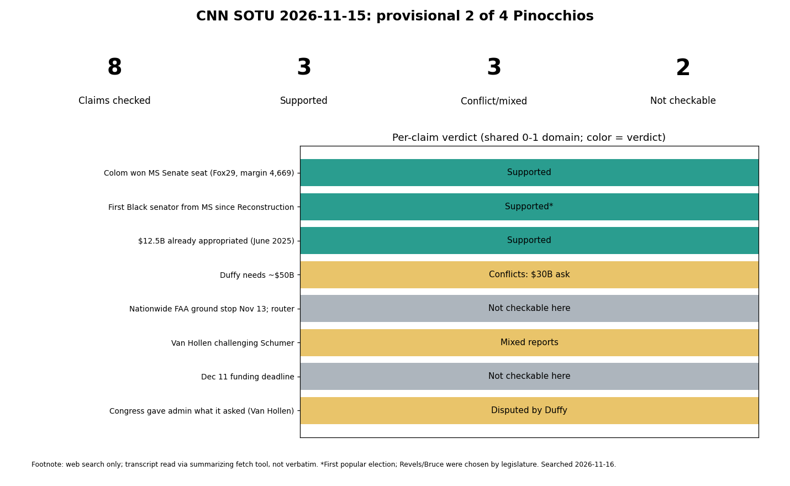

Provisional 2 of 4 Pinocchios: the verifiable facts hold, Duffy's headline numbers and the Van Hollen framing do not cleanly check
Of 8 claims checked, 3 are supported, 3 conflict with or are only partly supported by public reporting, and 2 could not be checked (no coverage found). The grade is low-to-medium confidence.
- Supported: Scott Colom won Mississippi's Senate seat (Fox29 reports a 4,669-vote margin over Hyde-Smith; single source, certification not confirmed). $12.5B appropriated in June 2025 matches reporting.
- Conflict: Duffy's "about $50 billion" does not match the $30B request reported in September 2026 (Nextgov, Washington Examiner). It may be a different total, but I found no source.
- Mixed: Van Hollen "challenging" Schumer: Newsweek and Al-Monitor report he is considering it, while an undated Hill item says he is not.
- Not checkable here: a nationwide FAA ground stop on Friday (Nov 13) from a router; the Dec 11 funding deadline. Searches returned only the Jan 2023 NOTAM outage.
- Misleading framing: "First election of a Black senator from Mississippi since Reconstruction" is true only as a popular election; Revels and Bruce were chosen by the legislature. Duffy blames Congress while Van Hollen says Congress gave what was asked, and both are partly defensible.
- Limit: the transcript came through a summarizing fetch tool, not verbatim, so quotes were not checked word for word.
Sources
- https://transcripts.cnn.com/show/sotu/date/2026-11-15/segment/01
- https://www.fox29.com/news/scott-colom-wins-senate-mississippi
- https://www.nextgov.com/modernization/2026/09/30b-more-needed-air-traffic-control-modernization-transportation-secretary-says/416324/
- https://www.washingtonexaminer.com/?p=4745470
- https://www.al-monitor.com/originals/2026/11/slotkin-van-hollen-emerge-potential-challengers-schumers-senate-leadership
- https://newsweek.com/chuck-schumer-chris-van-hollen-senate-majority-leader-challenge-12687780
- https://thehill.com/homenews/senate/6202343-van-hollen-not-challenging-schumer/amp/